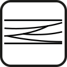

Tratto da www.viaggioefossiliappennino.org. Autore: Federico Venturi. Licenza: Creative Commons Attribuzione – Condividi allo stesso modo 3.0 Unported (CC BY-SA 3.0)
Gola del Sentino 
Informazioni geografiche e cartografiche
| Coordinate Geografiche (WGS84) |
Latitudine 43° 25′ 31,53″ N (43,4254) Longitudine 12° 42′ 54,89″ E (12,7152) |
| Quota (m s.l.m.) | 580 - 370 |
| Localizzazione | Regione: Umbria Provincia: Perugia Comune: Scheggia e Pascelupo Toponimo: .. |
| Riferimenti cartografici | IGM Serie 25V: 116 II NO CTR: 291130 |
| Forma del Geosito | Areale |
Accessibilità
| Accessibilità | |
| Note di accessibilità | Il geosito comprende una serie di affioramenti rocciosi molto importanti dal punto di vista stratigrafico e paleontologico. Le sezioni stratigrafiche sono osservabili lungo la strada SR 360 (tratto tra Scheggia e Sassoferrato) sia in destra sia in sinistra idrografica del T. Sentino. Il sito comprende gli affioramenti della successione di Valdorbia (geosito 2), la sezione tipo del periodo Toarciano della Serie stratigrafica umbro-marchigiana (formazione del "Rosso Ammonitico", intorno al km 55) e un bell'affioramento della formazione delle "Marne del Monte Serrone" (in località Molino delle Ogne, a circa 2.5 km da Ponte Calcara). |
| Periodo di visita consigliato |
Interesse scientifico
| Interesse scientifico | Stratigrafia Paleontologia, Sedimentologia |
| Grado d'interesse | |
| Valutazione interesse scientifico | Rappresentativo |
| Litotipi caratterizzanti | Calcari e calcari marnosi (Giurassico) |
| Processo genetico | Sedimentologico (deposizione in ambiente marino) |
| Interesse contestuale | Didattico |
| Panoramico | |
| Valore scenico |
Conservazione
| Stato di conservazione | Scarso |
| Descrizione del degrado | Gli affioramenti a lato della Strada Regionale 360 sono spesso nascosti dalla vegetazione e da depositi detritici. Per ampi tratti la strada è protetta da reti paramassi che non consentono l'accesso diretto agli affioramenti e che, quando sono inerbite, li nascondono. |
| Protezione e vincoli | Siti di Importanza Comunitaria (Dir. Habitat 92/43/CEE): Gola del Corno di Catria (IT5210005 tra Valdorbia e Isola Fossara); Poggio Pantano (IT5210074); Parco Naturale Regionale: Parco del Monte Cucco (tra Scheggia e il confine regionale Umbria-Marche). |
| Proposta di tutela | Necessaria. |
Descrizione
Bibliografia
Immagini e schemi